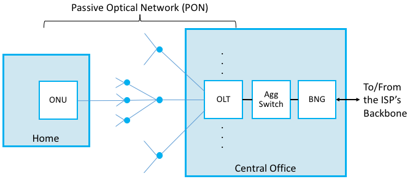
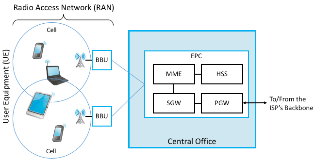
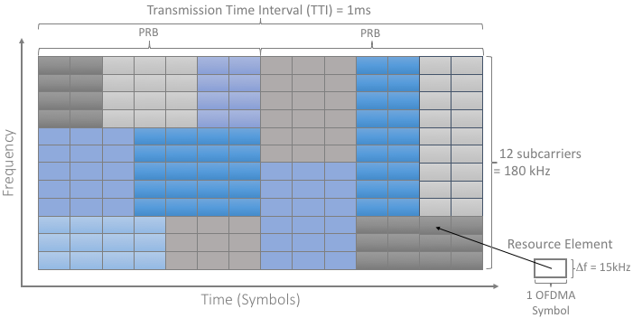

2.8 접속 네트워크
우리가 집, 직장, 학교, 그리고 많은 공공장소에서 인터넷에 연결할 때 보통 사용하는 Ethernet과 Wi-Fi 연결 외에도, 우리 대부분은 ISP로부터 구매한 액세스 또는 광대역 서비스를 통해 인터넷에 연결한다. 이 절에서는 그러한 기술 두 가지, 즉 흔히 가정까지 광섬유라고 부르는 수동 광 네트워크 (PON)와 우리의 모바일 장치를 연결하는 셀룰러 네트워크를 설명한다. 두 경우 모두 네트워크는 다중 접속(Ethernet과 Wi-Fi처럼)이지만, 곧 보겠듯이 접속을 중재하는 방식은 상당히 다르다.
조금 더 맥락을 잡아보자. ISP(예: 통신사나 케이블 회사)는 대개 전국 규모의 백본을 운영하고, 그 백본의 주변부에는 한 도시나 동네를 담당하는 수백 개에서 수천 개의 에지 사이트가 연결되어 있다. 이러한 에지 사이트는 통신사 세계에서는 흔히 Central Office(중앙국), 케이블 세계에서는 Head End(헤드엔드) 라고 부른다. 이름만 보면 "중앙화"나 "계층의 루트"를 뜻하는 것처럼 보이지만, 실제로 이 사이트들은 ISP 네트워크의 가장자리, 즉 고객에게 직접 연결되는 라스트 마일의 ISP 측에 위치한다. PON과 셀룰러 접속 네트워크는 이러한 시설을 거점으로 삼는다.[1]
2.8.1 수동 광 네트워크
PON은 가정과 사업장에 광섬유 기반 광대역 서비스를 제공할 때 가장 널리 사용되는 기술이다. PON은 점대다점 설계를 채택하므로, 네트워크는 ISP의 네트워크에서 시작되는 하나의 지점이 여러 갈래로 퍼져 최대 1024개의 가정에 도달하는 트리 구조를 이룬다. PON이라는 이름은 분배기(splitter)가 수동적이라는 사실에서 유래한다. 즉, 분배기는 프레임을 능동적으로 저장 후 전달하지 않고 상향 및 하향 광 신호를 전달한다. 이런 점에서 분배기는 고전적인 Ethernet에서 사용된 리피터의 광학 버전이라고 할 수 있다. 이후 프레이밍은 송신 측인 ISP 구내의 Optical Line Terminal (OLT)이라는 장치와, 각 가정의 종단에 있는 Optical Network Unit (ONU)이라는 장치에서 이루어진다.
그림 52는 PON의 한 예를 보여주는데, 단순화를 위해 ONU 하나와 OLT 하나만 묘사한다. 실제로는 하나의 중앙국에 여러 개의 OLT가 있으며, 이들이 수천 가구의 고객 주택에 연결된다. 완전성을 위해 그림 52에는 PON이 ISP의 백본(그리고 따라서 나머지 인터넷)과 어떻게 연결되는지를 보여주는 두 가지 세부 사항도 들어 있다. Agg Switch는 여러 OLT의 트래픽을 집선하고, BNG (Broadband Network Gateway)는 여러 기능 가운데 특히 과금 목적의 인터넷 트래픽 계량을 수행하는 통신 장비다. 이름이 시사하듯, BNG는 사실상 접속 네트워크(BNG 왼쪽의 모든 것)와 인터넷(BNG 오른쪽의 모든 것) 사이의 게이트웨이이다.
{kind=link}

그림 52. 중앙국의 OLT를 가정과 사업장의 ONU에 연결하는 PON의 예.
분배기가 수동적이기 때문에, PON은 어떤 형태로든 다중 접속 프로토콜을 구현해야 한다. 그 접근 방식은 다음과 같이 요약할 수 있다. 먼저, 상향 트래픽과 하향 트래픽은 서로 다른 두 개의 광 파장에 실려 전송되므로 완전히 독립적이다. 하향 트래픽은 OLT에서 시작해 PON의 모든 링크를 따라 전파된다. 그 결과 모든 프레임이 모든 ONU에 도달한다. 그러면 각 ONU는 그 파장으로 전송된 개별 프레임 안의 고유 식별자를 확인하고, 자신을 위한 식별자이면 프레임을 유지하고 그렇지 않으면 폐기한다. ONU가 이웃의 트래픽을 엿듣지 못하도록 암호화가 사용된다.
상향 트래픽은 상향 파장에서 시분할 다중화되며, 각 ONU는 주기적으로 전송할 차례를 얻는다. ONU들은 수 킬로미터에 걸친 꽤 넓은 지역에 흩어져 있고 OLT까지의 거리도 서로 다르기 때문에, SONET처럼 동기화된 시계를 기준으로 전송하게 하는 것은 실용적이지 않다. 대신 OLT가 각 ONU에 전송 허가(grant)를 보내 전송할 수 있는 시간 구간을 부여한다. 다시 말해, 하나의 OLT가 공유 PON의 라운드로빈 공유를 중앙에서 구현하는 책임을 진다. 여기에는 OLT가 각 ONU에 서로 다른 시간 점유율을 부여하여 사실상 서로 다른 서비스 수준을 구현하는 것도 포함된다.
PON은 더 높아지는 대역폭을 수용하도록 시간이 지나며 진화해 온 공유 알고리즘을 정의한다는 점에서 Ethernet과 비슷하다. G-PON (Gigabit-PON)은 현재 가장 널리 배치되어 있으며 2.25Gbps 대역폭을 지원한다. XGS-PON (10 Gigabit-PON)은 이제 막 배치되기 시작하고 있다.
2.8.2 셀룰러 네트워크
셀룰러 전화 기술은 아날로그 음성 통신에서 출발했지만, 오늘날에는 셀룰러 표준을 기반으로 한 데이터 서비스가 일반적이다. Wi-Fi와 마찬가지로, 셀룰러 네트워크도 무선 스펙트럼의 특정 대역폭에서 데이터를 전송한다. 하지만 Wi-Fi는 누구나 2.4GHz 또는 5GHz 대역의 채널을 사용할 수 있는 반면(우리 대부분이 집에 기지국을 설치하듯이, 기지국만 세우면 된다), 다양한 주파수 대역의 독점 사용권은 경매를 통해 배분되어 서비스 제공자에게 라이선스가 주어지며, 이들은 다시 가입자에게 모바일 접속 서비스를 판매한다.
셀룰러 네트워크에 사용되는 주파수 대역은 세계 각지에서 서로 다르며, ISP가 서로 다른 주파수 대역을 차지하는 구형/레거시 기술과 신형/차세대 기술을 동시에 지원하는 경우가 많기 때문에 더 복잡하다. 큰 흐름만 요약하면, 전통적인 셀룰러 기술은 700MHz에서 2400MHz 사이에 분포하고, 새로운 중간 스펙트럼 할당은 현재 6GHz에서 이루어지고 있으며 밀리미터파(mmWave) 할당은 24GHz 이상에서 열리고 있다.
802.11과 마찬가지로 셀룰러 기술도 유선 네트워크에 연결된 기지국을 사용한다. 셀룰러 네트워크에서 기지국은 흔히 Broadband Base Unit (BBU)이라고 부르고, 여기에 연결되는 모바일 장치는 보통 User Equipment (UE)라고 하며, BBU들의 집합은 중앙국에 호스팅된 Evolved Packet Core (EPC)에 연결된다. EPC가 담당하는 무선 네트워크는 흔히 Radio Access Network (RAN)이라고 불린다.
BBU의 공식 명칭은 또 다른 이름인 Evolved NodeB이며, 흔히 eNodeB 또는 eNB로 줄여 부른다. 여기서 NodeB는 셀룰러 네트워크의 초기 형태에서 무선 장치를 부르던 이름이다(이후 계속 진화해 왔다). 셀룰러 세계가 빠른 속도로 진화하고 있고 eNB가 곧 gNB로 업그레이드될 예정이므로, 여기서는 더 일반적이고 덜 난해한 BBU라는 용어를 사용한다.
그림 53은 종단 간 시나리오의 한 가지 가능한 구성을 약간의 추가 세부 사항과 함께 보여준다. EPC는 여러 하위 구성 요소를 가지며, 여기에는 MME (Mobility Management Entity), HSS (Home Subscriber Server), 그리고 S/PGW (Session/Packet Gateway) 쌍이 포함된다. 첫 번째는 RAN 전반에서 UE의 이동을 추적하고 관리하며, 두 번째는 가입자 관련 정보를 담은 데이터베이스이고, 게이트웨이 쌍은 RAN과 인터넷 사이에서 패킷을 처리하고 전달한다(EPC의 사용자 평면(user plane)을 형성한다). 여기서 "가능한 구성 중 하나"라고 말한 이유는, 셀룰러 표준이 하나의 MME가 몇 개의 S/PGW를 담당하는지에 대해 폭넓은 가변성을 허용하기 때문에, 하나의 MME가 여러 중앙국이 서비스하는 넓은 지리적 영역에 걸쳐 이동성을 관리할 수도 있기 때문이다. 마지막으로, 그림 53에 명시적으로 드러나 있지는 않지만, ISP의 PON 네트워크가 원격 BBU를 중앙국으로 다시 연결하는 데 사용되는 경우도 있다.
{kind=link}

그림 53. 셀룰러 장치 집합 (UE)을 중앙국에 호스팅된 Evolved Packet Core (EPC)에 연결하는 Radio Access Network (RAN).
BBU의 안테나가 서비스하는 지리적 영역을 셀이라고 한다. 하나의 BBU는 하나의 셀만 담당할 수도 있고, 여러 방향성 안테나를 사용해 여러 셀을 담당할 수도 있다. 셀의 경계는 명확하게 딱 떨어지지 않으며, 서로 겹친다. 셀이 겹치는 곳에서는 하나의 UE가 잠재적으로 여러 BBU와 통신할 수 있다. 하지만 어느 시점이든 UE는 단 하나의 BBU와 통신하며 그 제어를 받는다. 장치가 셀을 벗어나기 시작하면 하나 이상의 다른 셀과 겹치는 영역으로 이동한다. 현재의 BBU는 휴대전화로부터 오는 신호가 약해지는 것을 감지하고, 그 장치의 제어를 가장 강한 신호를 받고 있는 기지국으로 넘긴다. 이때 장치가 통화나 다른 네트워크 세션에 참여하고 있다면, 세션은 새로운 기지국으로 옮겨져야 하는데, 이를 handoff라고 한다. 핸드오프를 위한 의사결정 과정은 MME의 담당 범위에 속하며, 역사적으로 이는 셀룰러 장비 공급업체의 독점적 구현 영역이었다(비록 이제는 오픈 소스 MME 구현도 등장하기 시작하고 있지만).
셀룰러 네트워크를 구현하는 프로토콜에는 여러 세대가 있었으며, 일상적으로 1G, 2G, 3G 등으로 불린다. 처음 두 세대는 음성만 지원했으며, 3G에서 광대역 접속으로의 전환이 정의되어 초당 수백 킬로비트 수준의 데이터 속도를 지원했다. 오늘날 산업계는 4G (보통 초당 수 메가비트 수준의 데이터 속도 지원)에 와 있으며, 데이터 속도가 10배 증가할 것이라는 약속과 함께 5G로 전환하는 과정에 있다.
3G 이후로 세대 구분은 실제로 3GPP (3rd Generation Partnership Project)가 정의한 표준에 대응한다. 이름에 "3G"가 들어 있지만, 3GPP는 계속해서 4G와 5G의 표준도 정의하고 있으며, 각각은 표준의 하나의 릴리스에 대응한다. 이미 공개된 Release 15는 4G와 5G를 가르는 분기점으로 여겨진다. 다른 이름으로는 이러한 릴리스와 세대의 연속을 LTE라고 부르며, 이는 Long-Term Evolution의 약자다. 핵심은 표준이 불연속적인 릴리스의 연속으로 발표되더라도, 산업 전체는 LTE라고 불리는 꽤 잘 정의된 진화 경로를 따라 왔다는 점이다. 이 절에서는 LTE 용어를 사용하되, 적절한 경우 5G에서 도입되는 변화를 함께 강조한다.
LTE 무선 인터페이스의 가장 큰 혁신은 사용 가능한 무선 스펙트럼을 UE에 어떻게 할당하느냐에 있다. 경쟁 기반인 Wi-Fi와 달리, LTE는 예약 기반 전략을 사용한다. 이러한 차이는 각 시스템이 활용도에 대해 두는 근본 가정에서 비롯된다. Wi-Fi는 네트워크 부하가 가볍다고 가정하기 때문에 무선 링크가 유휴 상태이면 낙관적으로 전송하고 경합이 감지되면 물러선다. 반면 셀룰러 네트워크는 높은 활용도를 가정하고(또 실제로 그렇게 되도록 노력하며), 따라서 사용 가능한 무선 스펙트럼의 서로 다른 "지분"을 각 사용자에게 명시적으로 배정한다.
LTE의 최첨단 매체 접근 메커니즘은 Orthogonal Frequency-Division Multiple Access (OFDMA)라고 한다. 핵심 아이디어는 서로 직교하는 12개의 부반송파 주파수 집합 위에 데이터를 다중화하는 것으로, 각 부반송파는 독립적으로 변조된다. OFDMA의 "Multiple Access"는 여러 사용자를 대신하는 데이터가 서로 다른 부반송파 주파수와 서로 다른 시간 길이를 사용해 동시에 전송될 수 있음을 뜻한다. 서브밴드는 좁다 (예: 15kHz). 하지만 사용자 데이터를 OFDMA 심볼로 코딩하는 방식은 인접한 대역 사이의 간섭으로 인한 데이터 손실 위험을 최소화하도록 설계되어 있다.
OFDMA를 사용하면 자연스럽게 무선 스펙트럼을 그림 54와 같은 2차원 자원으로 개념화하게 된다. 최소 스케줄링 단위인 Resource Element (RE)는 한 부반송파 주파수 주변의 15kHz 폭 대역과 하나의 OFDMA 심볼을 전송하는 데 걸리는 시간에 해당한다. 각 심볼에 인코딩할 수 있는 비트 수는 변조율에 따라 달라지므로, 예를 들어 Quadrature Amplitude Modulation (QAM)을 사용하면 16-QAM은 심볼당 4비트, 64-QAM은 심볼당 6비트를 제공한다.
{kind=link}

그림 54. 사용 가능한 무선 스펙트럼을 스케줄 가능한 Resource Element의 2차원 격자로 추상화해 표현한 모습.
스케줄러는 7x12=84개의 Resource Element로 이루어진 블록, 즉 Physical Resource Block (PRB) 단위로 할당 결정을 내린다. 그림 54는 서로 연속된 두 개의 PRB를 보여주며, UE는 서로 다른 색의 블록으로 표현되어 있다. 물론 시간은 한 축을 따라 계속 흐르고, 라이선스를 받은 주파수 대역의 크기에 따라 다른 축에는 훨씬 더 많은 부반송파 슬롯 (그리고 따라서 PRB)이 존재할 수 있으므로, 스케줄러는 본질적으로 전송할 PRB들의 시퀀스를 스케줄링하는 셈이다.
그림 54에 표시된 1ms의 Transmission Time Interval (TTI)은 BBU가 UE로부터 자신들이 경험하고 있는 신호 품질에 대한 피드백을 받는 시간 구간에 해당한다. 이 피드백은 Channel Quality Indicator (CQI)라고 불리며, 본질적으로 관측된 신호대잡음비를 보고한다. 이 값은 UE가 데이터 비트를 복원할 수 있는 능력에 영향을 준다. 그러면 기지국은 이 정보를 사용해 자신이 서비스하는 UE에게 사용 가능한 무선 스펙트럼을 어떻게 할당할지 조정한다.
지금까지 설명한 무선 스펙트럼 스케줄링 방식은 4G에 특화된 것이다. 4G에서 5G로의 전환은 무선 스펙트럼을 스케줄링하는 방식에 추가적인 자유도를 도입해, 셀룰러 네트워크를 더 다양한 장치와 응용 영역에 맞게 적응시킬 수 있게 한다.
근본적으로 5G는 무선 스펙트럼의 서로 다른 대역에 각각 최적화된 파형들의 계열을 정의한다. 4G가 하나의 파형만 명시했던 것과는 대조적이다.[2] 반송파 주파수가 1GHz 미만인 대역은 주로 도달 거리에 초점을 두고 모바일 광대역과 대규모 IoT 서비스를 제공하도록 설계되었다. 1GHz에서 6GHz 사이의 반송파 주파수는 더 넓은 대역폭을 제공하도록 설계되었고, 모바일 광대역과 미션 크리티컬 응용에 초점을 둔다. 24GHz를 넘는 반송파 주파수(mmWave)는 짧은 가시선 범위에서 매우 넓은 대역폭을 제공하도록 설계되었다.
이처럼 서로 다른 파형은 스케줄링 간격과 부반송파 간격, 즉 방금 설명한 Resource Element의 "크기"에 영향을 준다.
1GHz 미만 대역에서 5G는 최대 50MHz 대역폭을 허용한다. 이 경우 파형은 두 가지인데, 하나는 부반송파 간격이 15kHz이고 다른 하나는 30kHz이다. (그림 54의 예에서는 15kHz를 사용했다.) 이에 대응하는 스케줄링 간격은 각각 0.5ms와 0.25ms이다. (그림 54의 예에서는 0.5ms를 사용했다.)
1GHz에서 6GHz 사이의 대역에서는 최대 대역폭이 100MHz까지 올라간다. 그에 따라 부반송파 간격이 15kHz, 30kHz, 60kHz인 세 가지 파형이 있으며, 각각의 스케줄링 간격은 0.5ms, 0.25ms, 0.125ms이다.
밀리미터파 대역에서는 대역폭이 최대 400MHz까지 갈 수 있다. 여기에는 부반송파 간격이 60kHz와 120kHz인 두 가지 파형이 있으며, 둘 다 스케줄링 간격은 0.125ms이다.
이처럼 다양한 선택지가 중요한 이유는 스케줄러에 또 하나의 자유도를 추가하기 때문이다. 스케줄러는 사용자에게 리소스 블록(resource block)을 할당하는 것 외에도, 자신이 스케줄링을 담당하는 대역에서 사용하는 파형을 바꾸어 리소스 블록의 크기를 동적으로 조정할 수 있다.
4G든 5G든, 스케줄링 알고리즘은 동시에 (a) 사용 가능한 주파수 대역의 활용도를 극대화하고, (b) 모든 UE가 필요한 서비스 수준을 받도록 보장해야 하는 어려운 최적화 문제다. 이 알고리즘은 3GPP가 명시하지 않으며, 대신 BBU 공급업체의 독점적 지식재산으로 남아 있다.